Inhalt Index DeskTop Bronstein

 Lineare Algebra Lineare Gleichungssysteme Lösung linearer Gleichungssysteme
Lineare Algebra Lineare Gleichungssysteme Lösung linearer Gleichungssysteme


In dem wichtigen Spezialfall, in dem die Anzahl der Unbekannten mit der Anzahl der Gleichungen des Systems
übereinstimmt und die Koeffizientendeterminante 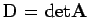 nicht verschwindet, d.h.
| 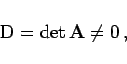 | (4.114b) |
kann die Lösung des inhomogenen Gleichungssystems (4.114a) explizit und eindeutig angegeben werden:
| 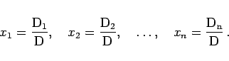 | (4.114c) |
Mit 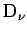 wird die Determinante bezeichnet, die aus 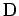 dadurch entsteht, daß die Elemente  der 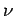-ten Spalte von durch die Absolutglieder 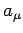 ersetzt werden, z.B.
der 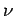-ten Spalte von durch die Absolutglieder 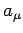 ersetzt werden, z.B.
| 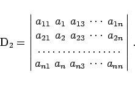 | (4.114d) |
Ist 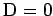 und sind nicht alle 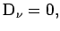 dann ist das System (4.114a) unlösbar. Im Falle und 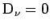 für alle 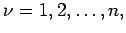 d.h. und alle sind gleich Null, ist es möglich, daß eine Lösung existiert. Diese ist aber nicht eindeutig (s. Hinweis).
| Beispiel |
Hinweis: Für die praktische Lösung von linearen Gleichungssystemen höherer Dimensionen ist die CRAMERsche Regel nicht geeignet. Der Rechenaufwand übersteigt mit wachsender Dimension sehr schnell alle Vorstellungen. Deshalb verwendet man zur numerischen Lösung linearer Gleichungssysteme den GAUSSschen Algorithmus bzw. das Austauschverfahren oder iterative Methoden.